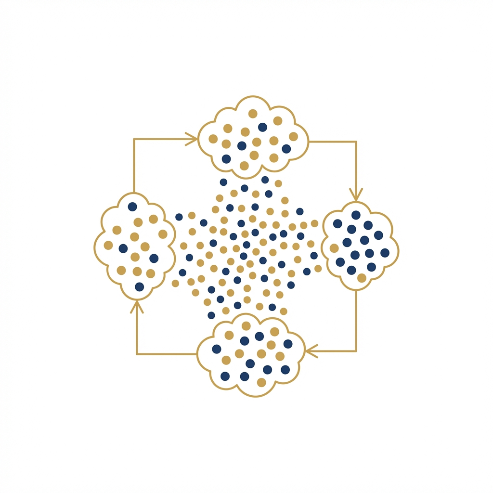

06
LECTURE
Week 6 Lecture Notes: Parallel Programming & OpenMP
Operating Systems 4 (EIOPS4A)
Week 6: Parallel Programming - Student Notes
HPC & Cluster ComputingWeek 6: Parallel Programming - Lecture Notes
Topic: Shared Memory (OpenMP), Distributed Memory (MPI), and HPC Libraries. Reference: Sterling Chapters 7, 8, 9, 10.
1. Introduction to Parallelism
- Goal: Solving larger problems faster.
- Key Metrics:
- Speedup ($S$): $T_{serial} / T_{parallel}$. Ideally linear ($S=P$).
- Efficiency ($E$): $S / P$. Usage of resources.
- Scaling Laws:
- Amdahl's Law: Strong Scaling (fixed problem size). Limited by serial portion ($s$). Max Speedup = $1/s$.
- Gustafson's Law: Weak Scaling (growing problem size). "We can do more work in the same time."
2. Shared Memory: OpenMP
- Model: Single node, multiple cores, shared RAM.
- Mechanism: Threads (lightweight) spawned via
#pragma omp parallel. - Work Sharing:
#pragma omp for: Distribute loops.schedule(static)vsschedule(dynamic): Balancing workload.
- Critical Issues:
- Race Conditions: Multiple threads writing to same var.
- Reduction: Safe parallel summation (
reduction(+:sum)).
3. Distributed Memory: MPI (Message Passing Interface)
- Model: Multiple nodes, private RAM, network communication.
- Mechanism: Explicit processes (Ranks) sending messages.
- Basics:
MPI_Init/MPI_Finalize.MPI_Comm_rank(Who am I?) /MPI_Comm_size(How many?).
- Point-to-Point:
MPI_Send/MPI_Recv.- Blocking: Waits for buffer safety. Safe but slow.
- Deadlock: Circular wait (Rank 0 waiting for 1, 1 waiting for 0).
- Collectives:
MPI_Bcast: One-to-All (Replication).MPI_Scatter: One-to-Many (Decomposition).MPI_Gather: Many-to-One (Reassembly).MPI_Reduce: Many-to-One with Math (Sum/Max).
4. Parallel Strategy & Libraries
- Environment Modules:
module load: Managing logical software stacks.module avail,module list.
- The Software Stack (Sterling Ch 10):
- BLAS: Linear Algebra (Level 1, 2, 3).
cblas_dgemm. - Parallel I/O: HDF5 / NetCDF.
H5Dwrite. Self-describing, binary. - FFT: FFTW.
fftw_plan.
- BLAS: Linear Algebra (Level 1, 2, 3).
- Benefits:
- Performance: Vendor optimized (MKL, OpenBLAS).
- Portability: Standard interfaces.